|
Haihua Chen (陈海华)
Email: haihua.chen[at]unt.edu Google Scholar Linkedin DBLP ResearchGate CV |
|
Haihua Chen is an Assistant Professor in the Anuradha and Vikas Sinha Department of Data Science and the Director of the Intelligent Data Engineering and Analytics Lab at the University of North Texas.
He is the current Chair of ASIS&T Special Interest Group – Scientific and Technical Information (SIG-STI). Dr. Chen’s research focuses on building high-performance and reliable artificial intelligence systems by applying natural language processing and machine learning in important domains, such as healthcare, legal, and science, with the mission of solving social problems in health, humanitarian aid, social justice, and sustainability.
He has coauthored more than 60 articles in prestige journals including Information Processing and Management, Knowledge-based systems, Journal of Biomedical Informatics, and others, and received nearly 1,000 citations in the last five years.
He is serving as co-editor for The Electronic Library, associated editor for Data Intelligence, PC chair for IEEE AITest 2025, organizing committee members for several international conferences, PC member for ACL, EMNLP, IEEE Big Data, and several top conference in NLP and AI.
Research interests: Data Science, Health Informatics, Legal AI, Document Intelligence, Scientific Innovation, Generative AI, AI Applications. I am recruiting perspective Ph.D. students with strong self-motivation and computational skills in Information Science, Data Science, Computer Science, and related domians will full financial support!. |
|
Research Philosophy: Research is the art of transforming curiosity into innovative knowledge that enriches human understanding and society.
-- 2025
|
|
[Jan. 2026] I will organize The Second International Workshop on Data Quality Aware, High-Performance, and Trustworthy AI Systems for Healthcare at IEEE/ACM CHASE 2026. [Jan. 2026] One paper accepted by WWW 2026. [Dec. 2025] I will serve as the PC Co-Chair for IEEE AITest 2026. [Dec. 2025] I will attend the NSF CISE RE Workshop at FIU. [Nov. 2025] Paper “Unveiling the Merits and Defects of LLMs in Automatic Review Generation for Scientific Papers” received the Best Poster Award at IEEE ICDM'25. [Jul. 2025] Named as IEEE ICAIT 2025 Best Reviewer. |
Extenal Grants:
|
[NSF] Title: REU Site: Making Generative Artificial Intelligence Responsible, Role: Senior Personnel, Duration: 2025-2028, Award Amount: $463,434. [NSF] Title: HSI Implementation and Evaluation Project: Developing a High-Quality Academic Environment for Broadening Participation of Hispanic Students in Computing, Role: Co-PI, Duration: 2022-2025, Award Amount: $499,608. |
Internal Grants:
|
[UNT] Title: Partner, Not Crutch: Designing a Metacognitive Nudge to Promote AI Co-Regulation, Role: Co-PI, Duration: 2026-2027, Award Amount: $5,000. [UNT] Title: Embodied & Multimodal AI for Cross-Cultural Access to Digital Archives: A UNT–Osaka Seed Collaboration, Role: PI, Duration: 2026, Award Amount: $5,000. [UNT COI] Title: Utilizing AI/ML to Enhance Personalized Health Information Services for Hispanic Populations during Disaster Recovery, Role: PI, Duration: 2024, Award Amount: $5,000. [UNT COI] Title: Towards a Large-scale and High-quality Corpus for Legal Argument Mining, Role: PI, Duration: 2022, Award Amount: $9,975. |
Arxiv First:


Journal Articles:

|
Zhongyi Wang, Zereg Wang, Guangzhao Zhang, Jiangping Chen, Markus Luczak-Roesch, Haihua Chen* Expert Systems with Applications (JCR Q1) 2025 [pdf] [code] |

|
Zhongyi Wang, Na Wang, Haoxuan Zhang, Zeren Wang, Zhou Wang, Junhua Ding, Haihua Chen* Information Processing & Management (JCR Q1) 2025 [pdf] [code] |

|
Haihua Chen, Ruochi Li, Ana Cleveland, Junhua Ding Journal of Biomedical Informatics (JCR Q1) 2025 [pdf] [code] |

|
Fengjiao Tu, Linjing Wu, Kinshuk, Junhua Ding, Haihua Chen* Education and Information Technologies (JCR Q1) 2024 [pdf] |

|
Zhongyi Wang, Haoxuan Zhang, Jiangping Chen, Haihua Chen* Journal of Informatics (JCR Q1) 2024 [pdf] [code] |
| 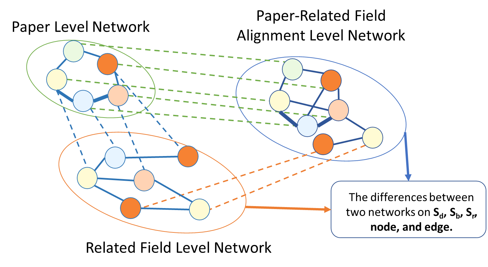 |
Zhongyi Wang, Haoxuan Zhang, Haihua Chen*, Yunhe Feng, Junhua Ding Journal of King Saud University - Computer and Information Sciences (JCR Q1) 2024 [pdf] [code] |
| 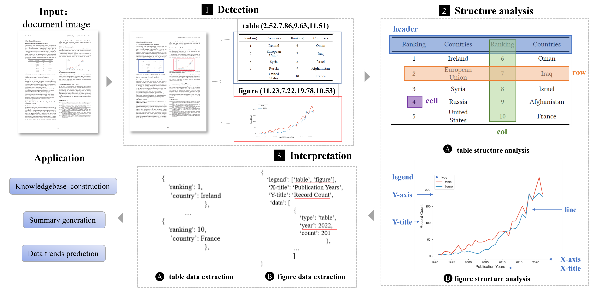 |
Jiani Huang, Haihua Chen, Fengchang Yu, Wei Lu ACM Computing Surveys (JCR Q1) 2024 [pdf] |
| 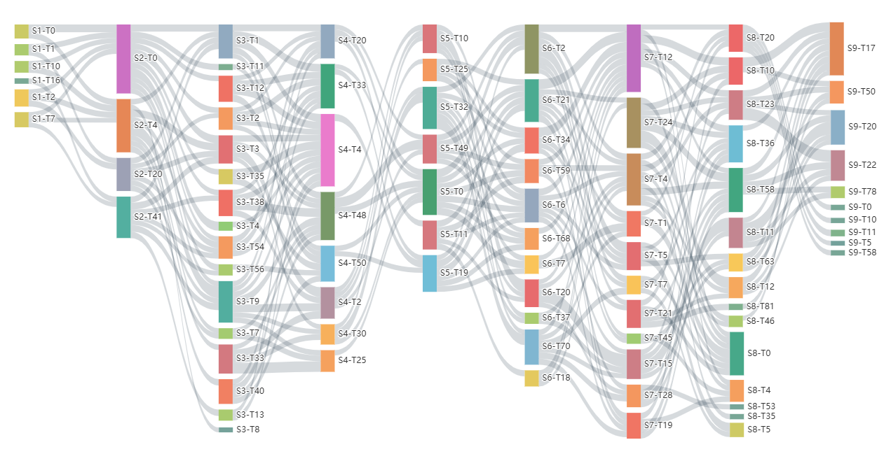 |
Zhongyi Wang, Jing Chen, Jiangping Chen, Haihua Chen* Scientometrics (JCR Q1) 2024 [pdf] [code] |
| 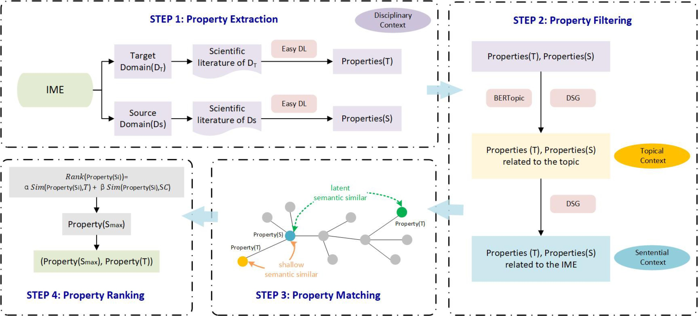 |
Zhongyi Wang, Siyuan Peng, Jiangping Chen, Xian Zhang, Haihua Chen* Knowledge-Based Systems (JCR Q1) 2023 [pdf] [code] |
| 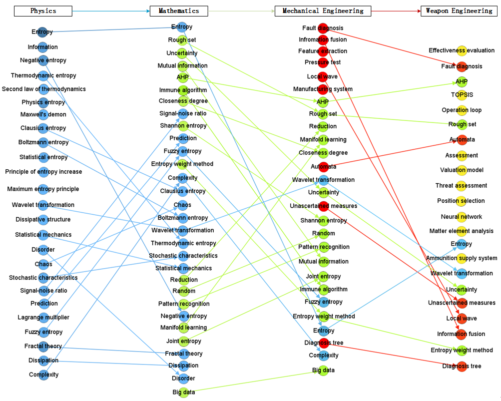 |
Zhongyi Wang, Siyuan Peng, Jiangping Chen, Amoni G Kapasule, Haihua Chen* Journal of King Saud University - Computer and Information Sciences (JCR Q1) 2023 [pdf] |
| 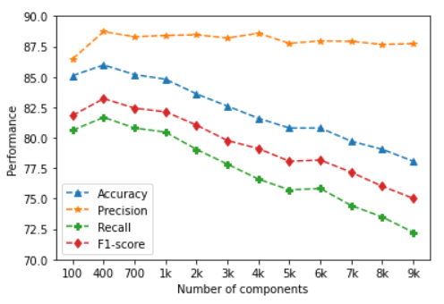 |
Haihua Chen, Lei Wu, Jiangping Chen, Wei Lu, Junhua Ding Information Processing & Management (JCR Q1) 2022 [pdf] [code] |
| 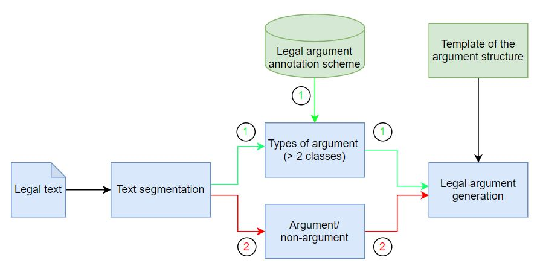 |
Haihua Chen, Lavinia F Pieptea, Junhua Ding IEEE Transactions on Reliability (JCR Q1) 2022 [pdf] [code] |
| 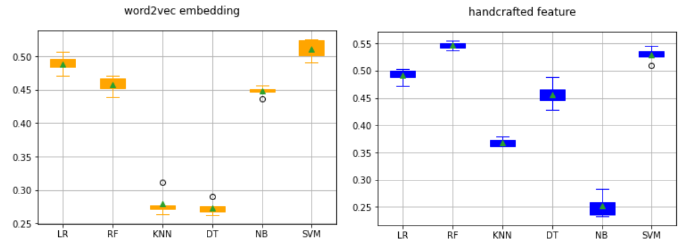 |
Haihua Chen*, Huyen Nguyen, Asmaa Alghamdi Scientometrics (JCR Q1) 2022 [pdf] [data] [code] |
| 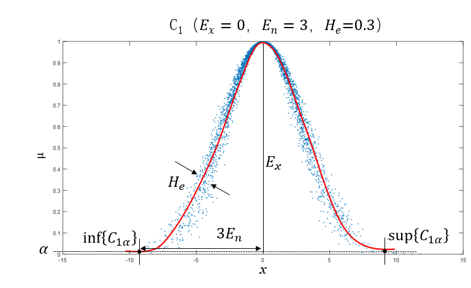 |
Zhongyi Wang, Keying Wang, Jiyue Liu, Jing Huang, Haihua Chen* Scientometrics (JCR Q1) 2022 [pdf] [code] |
| 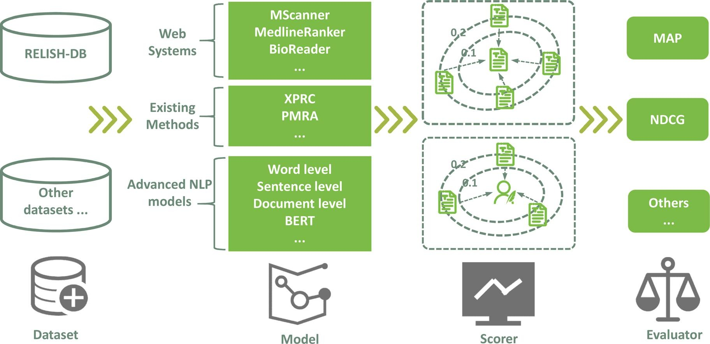 |
Li Zhang, Wei Lu, Haihua Chen, Yong Huang, Qikai Cheng Journal of biomedical informatics (JCR Q1) 2022 [pdf] |
| 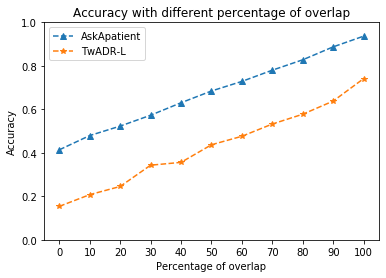 |
Haihua Chen, Jiangping Chen, Junhua Ding IEEE Transactions on Reliability (JCR Q1) 2022 [pdf] |
Conference Papers:

|
Changjiang Jiang, Fengchang Yu, Haihua Chen, Wei Lu, Jin Zeng Findings of the Association for Computational Linguistics: EMNLP 2025 [pdf] |
| 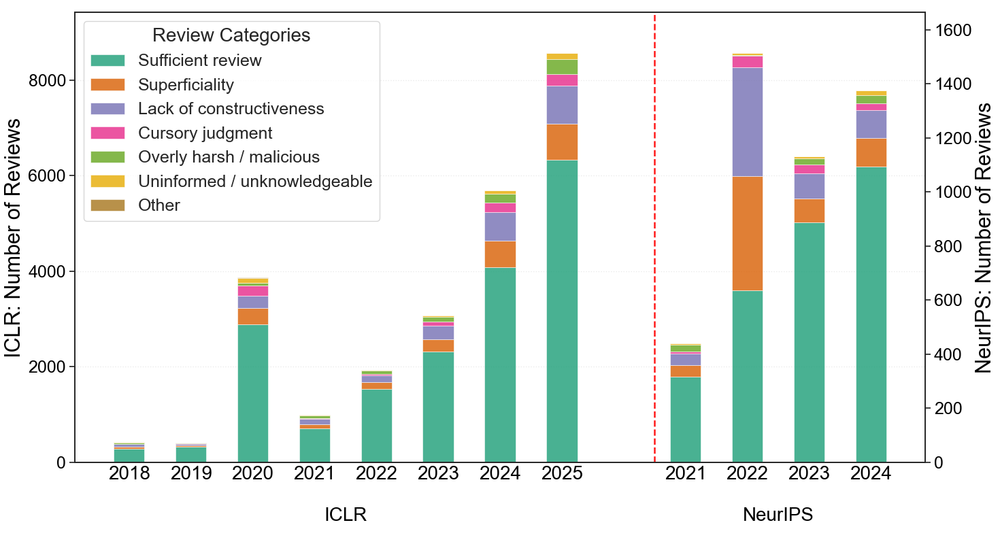 |
Haoxuan Zhang, Ruochi Li, Sarthak Shrestha, Shree Harshini Mamidala, Revanth Putta, Arka Krishan Aggarwal, Ting Xiao*, Junhua Ding, Haihua Chen* The ACM/IEEE-CS Joint Conference on Digital Libraries, JCDL 2025 [pdf] [code] |
| 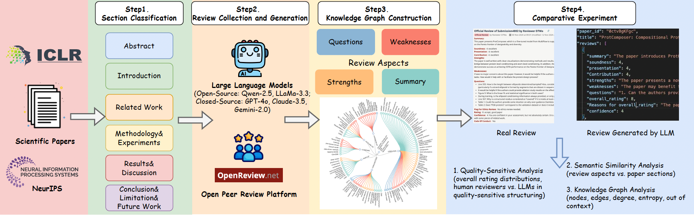 |
Ruochi Li, Haoxuan Zhang, Edward Gehringer, Ting Xiao, Junhua Ding, Haihua Chen* IEEE International Conference on Data Mining, ICDM 2025 Best Poster Award for the Regular Paper Session. [pdf] [code] |
| 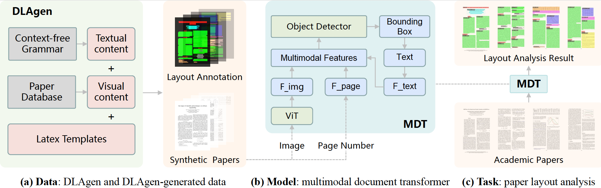 |
Dehao Ying, Fengchang Yu, Haihua Chen, Wei Lu The ACM/IEEE-CS Joint Conference on Digital Libraries, JCDL 2024 [pdf] |
| 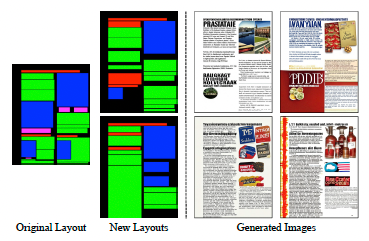 |
Dehao Ying, Fengchang Yu, Haihua Chen, Wei Lu ACM International Conference on Multimedia, MM 2024 [pdf] |

|
Yuhan Zhou, Fengjiao Tu, Kewei Sha, Junhua Ding, Haihua Chen* IEEE International Conference on Artificial Intelligence Testing, AITest 2024 [pdf] [GitHub] |
| 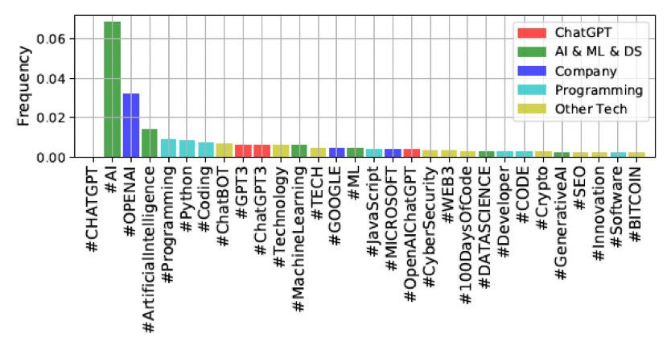 |
Yunhe Feng, Sreecharan Vanam, Manasa Cherukupally, Weijian Zheng, Meikang Qiu, Haihua Chen IEEE 47th Annual Computers, Software, and Applications Conference, COMPSAC 2023 Best Track Paper Award. [pdf] [Prompt Dataset] |
| 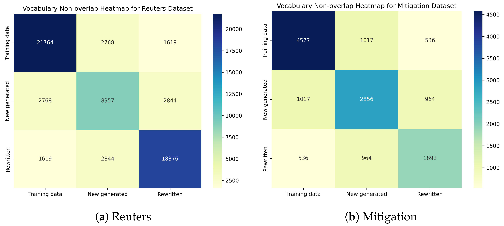 |
Huanhuan Zhao, Haihua Chen, Hong-Jun Yoon IEEE International Conference on Artificial Intelligence Testing, AITest 2023 Best Student Paper Award. [pdf] |

|
Kate Kargozari, Junhua Ding, Haihua Chen* IEEE International Conference on Artificial Intelligence Testing, AITest 2023 Best Paper Award. [pdf] |
Teaching
Spring 2026: INFO 5731: Computational Methods for Information Systems (Face to face)
Spring 2026: HINF 5506: Applications of Artificial Intelligence in Health (Face to face)
Fall 2025: INFO 5731: Computational Methods for Information Systems (Face to face)
Fall 2025: DTSC 3020: Introduction to Computation with Python (Face to face)
Summer 2025: INFO 5810: Data Analysis and Knowledge Discovery (Online)
Spring 2025: INFO 5731: Computational Methods for Information Systems (Face to face)
Spring 2025: HINF 5506: Applications of Artificial Intelligence in Health (Face to face)
Fall 2024: INFO 5731: Computational Methods for Information Systems (Face to face)
Summer 2024: INFO 5810: Data Analysis and Knowledge Discovery (Online)
Spring 2024: INFO 5731: Computational Methods for Information Systems (Face to face)
Spring 2024: HINF 5506: Applications of Artificial Intelligence in Health (Face to face)
For the full list of courses I have taught and their evaluation, please refer to my Previous Scheduled Teaching !
Area Chair of Conferences:
ECCV 2026
Reviewer of Journals:
IEEE Transactions on Pattern Analysis and Machine Intelligence (TPAMI)IEEE Transactions on Image Processing (TIP)
IEEE Transactions on Multimedia (TMM)
IEEE Transactions on Circuits and Systems for Video Technology (TCSVT)
IEEE Signal Processing Letters (SPL)
IEEE Transactions on Intelligent Vehicles (TIV)
Reviewer of Conferences:
CVPR, ICCV, ECCV, ICML, ICLR, NeurIPS, SIGGRAPH Asia, KDD, AAAI, IJCAI, ACM MM, WACV, ICME, FG, ICASSP
Reviewer of Workshops:
Efficient Deep Learning for Computer Vision (ECV) @ CVPR Transformers for Vision (T4V) @ CVPR
AI and Social Good @ IJCAI
Analysis and Modeling of Faces and Gestures (AMFG) @ ICCV
2025. Rocking Star of Research and Innovation, Department of Data Science, University of North Texas.
2025. Best Poster Award, The 2025 IEEE International Conference on Data Mining (ICDM2025), Washington DC, USA.
2025. Best Reviewer Award, The 2025 IEEE Technical Community on Learning Technology (TCLT), Changhua, Taiwan.
2024. Rising Star Runner-up, College of Information, University of North Texas.
2023. Best Student Paper Award, The 2023 IEEE International Conference on Artificial Intelligence Testing (AITest), Athens, Greece.
2023. Best Paper Award, The 2023 IEEE International Conference on Artificial Intelligence Testing (AITest), Athens, Greece.
2023. Best Paper Award of the SETA Track, The 2023 IEEE Computer Society Signature Conference on Computers, Software and Applications (COMPSAC), Torino, Italy.
2020. Best Paper Award, The 2020 IEEE 20th International Conference on Software Quality, Reliability and Security (QRS), Macau, China.
- Fengjiao Tu, Ph.D. Student in Information Science, UNT, Fall 2023 - Present
- Laxmigayathri Challa, Ph.D. Student in Information Science, UNT, Fall 2023 - Present
- Ruochi Li, Ph.D. Student in Computer Science, NCSU, Fall 2023 - Present
- Yuhan Zhou, Ph.D. Student in Information Science, UNT, Fall 2024 - Present
- Haoxuan Zhang, Ph.D. Student in Information Science, UNT, Fall 2024 - Present
- Komala Subramanyam Cherukuri, Ph.D. Student in Information Science, UNT, Fall 2024 - Present
- Mehri Sattari, Ph.D. Student in Information Science, UNT, Fall 2024 - Present
- Huyen Nguyen, Ph.D. Student in Information Science, UNT, Fall 2020 - Spring 2025
- Ngan Tran, Ph.D. Student in Information Science, UNT, Fall 2021 - Fall 2024
- Ampana Jayaram, MS Student in Data Science, UNT, Fall 2025 - Present
- Kanishk Sharma, MS Student in Data Science, UNT, Fall 2025 - Present
- Sai Donepudi, Undergraduate Student in Data Science, UNT, Fall 2024 - Present
- Julian Ondrey, Undergraduate Student in Computer Science, UNT, Fall 2025 - Present
- Eneojo Unwuchola, Undergraduate Student in Computer Science, UNT, Fall 2025 - Present
- Lizal Adhikari, Undergraduate Student in Data Science, UNT, Fall 2025 - Present
- Suvrat Sharma Bhatta, Undergraduate Student in Data Science, UNT, Fall 2025 - Present
I have been fortunate to work with many gifted students:
Area Chair of Conferences:
ECCV 2026
Reviewer of Journals:
IEEE Transactions on Pattern Analysis and Machine Intelligence (TPAMI)IEEE Transactions on Image Processing (TIP)
IEEE Transactions on Multimedia (TMM)
IEEE Transactions on Circuits and Systems for Video Technology (TCSVT)
IEEE Signal Processing Letters (SPL)
IEEE Transactions on Intelligent Vehicles (TIV)
Reviewer of Conferences:
CVPR, ICCV, ECCV, ICML, ICLR, NeurIPS, SIGGRAPH Asia, KDD, AAAI, IJCAI, ACM MM, WACV, ICME, FG, ICASSP
Reviewer of Workshops:
Efficient Deep Learning for Computer Vision (ECV) @ CVPR Transformers for Vision (T4V) @ CVPR
AI and Social Good @ IJCAI
Analysis and Modeling of Faces and Gestures (AMFG) @ ICCV
© 2025 Haihua Chen. Thanks to Xu Ma and Dr. Deqing Sun for the template. [Updated: Nov/2024]